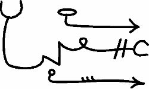

Ve bu LALARTU’nun Mührüdür:

Ve bil ki, ENKI’nin MINU’su bunlara karşı güçlüdür, ama yalnızca Demonik karakterde olan İşlemlere karşı ve bunlardan bazıları bu suretle nafile olmuştur. Bu yüzden her zaman için saklanmalıdır.
Bil ki, GELAL ve LILIT’in çağrıldıkları zaman hızla gelirler ve Ölümü hızlandırmak için Hayat Suyunu ve Hayat Besinini yağmalayarak insanların yataklarını işgal ederler, ama onların emekleri meyvelerini vermez çünkü formüllere sahip değillerdir. Ancak Rahip formüllere sahiptir ve Hayat Besini ve Hayat Suyu bunlar gibilerle, rahibin onları çağırmasıyla getirilir. Ama çok fazla çağırması gerekir çünkü Ayın ilk on gününden sonra Elementler ölüdür.
Ve GELAL bir Kadının yatağını istila eder ve LILIT bir Adamınkini ve bazen bu ziyaretlerin sonucu kötü varlıklar doğar ve bunlar öldürülmelidir, çünkü GELAL’in çocukları, onun ruhuna sahip olduklarından, KADİMİN doğal işçileridir ve LILIT’in çocukları da benzer şekildedir, ancak İnsanların algılayamayacağı gizli yerlerde doğar onlar ve İnsanların oldukları yerde yürümeye bırakıldıkları zamana kadar olgunlaşmış sayılmazlar.
Ve GELAL rüzgarlara biner, ama LILIT pek çok kez Sudan gelir. Bu akan Suyun Ayinlerde kullanılmasının nedenidir, temiz olmasından dolayı.